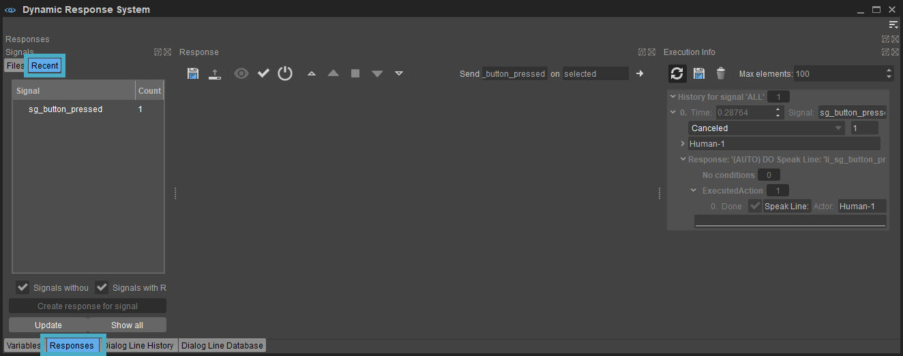
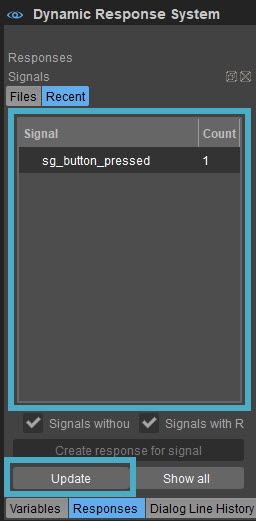
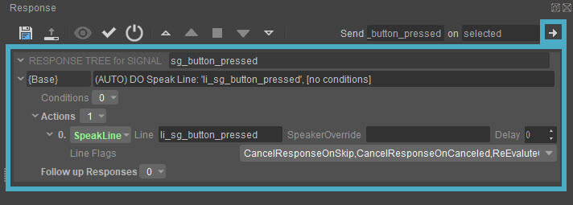
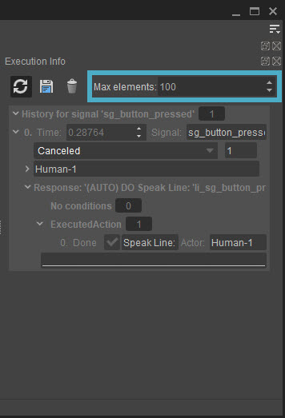
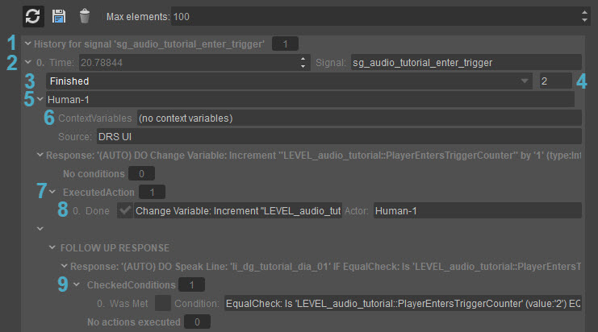

When testing the game if one of your responses does not work the way you planned it, you probably want to find out why. The signal history can help you with debugging the issue. This information is already partly covered in the Tutorial - Setting Up the Dynamic Response System page, but let's look into it in detail.
The signal history can be found under the Responses tab in the Dynamic Response System (DRS) widget: 
The Recent button shows you a list of all recently send signals. If your signal is not in this list, it would mean that it was not sent at all, meaning the problem is in the game logic.
If the list is not updated automatically, you need to press the Update button. 
After you update the list, you should be able to find your misbehaving response, and select it. 
You can view the current setup for the response in the middle of the widget, and you can directly edit it, and test it again by using the Send signal button which can be found on the right side of the Toolbar.
But for now, the focus point should be the Execution Info which is on the right side of the tool by default. 
This panel displays the history for the selected signal(s). You can use multi select to show more than one signal at a time.
At the very top, you can specify how many records you want to see in your list by typing a value in Max elements field. For example, if you specify 1 as the value, you will only see the most recent response.
The below images describe the information that you can get from the Execution Info panel: 
Execution Info panel is very useful when the user wants to debug the response that has been created.
The most important sections of the panel are as follows:
- History for signal: Displays the history for the indicated signal.
- Time: Indicates the time when the response (tree) started.
- Status: Indicates if the response is still running, cancelled or finished.
- Started Responses: Shows how many responses were executed during the processing of the signal.
- Actor: Displays the name of the actor that received the signal.
- ContextVariables: Shows if there were any context variables attached to the signal.
- ExecutedAction: Displays the amount of executed actions in the response.
- Action Status: Indicates if the action is finished or not.
- CheckedConditions: Shows the conditions that has been checked in the response.